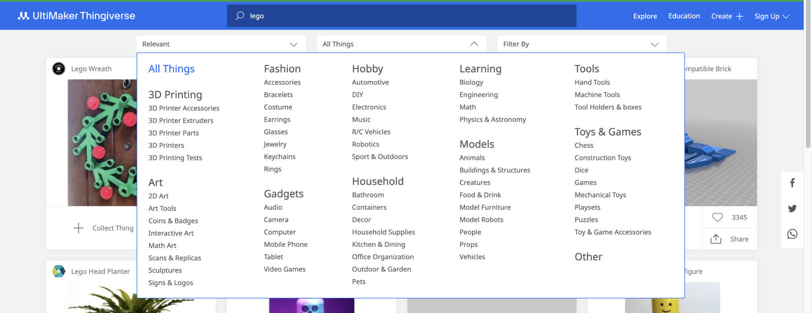
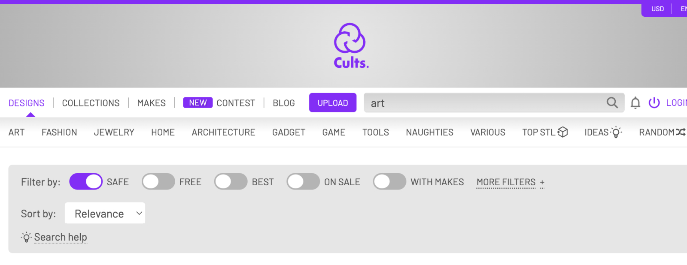
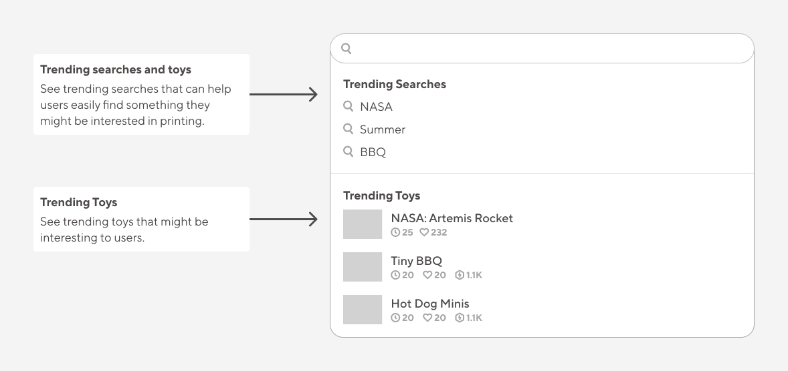
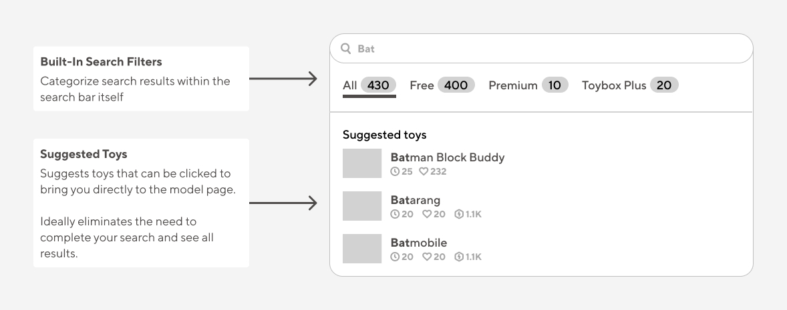
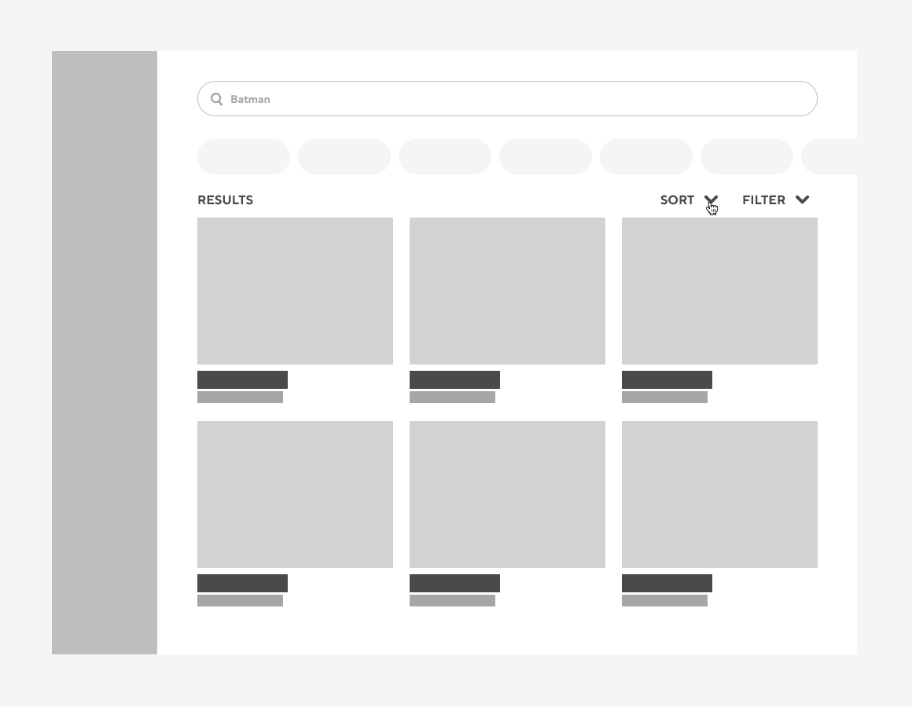
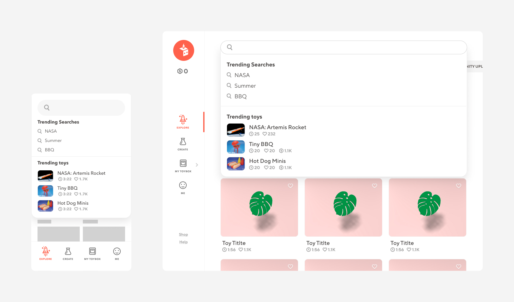
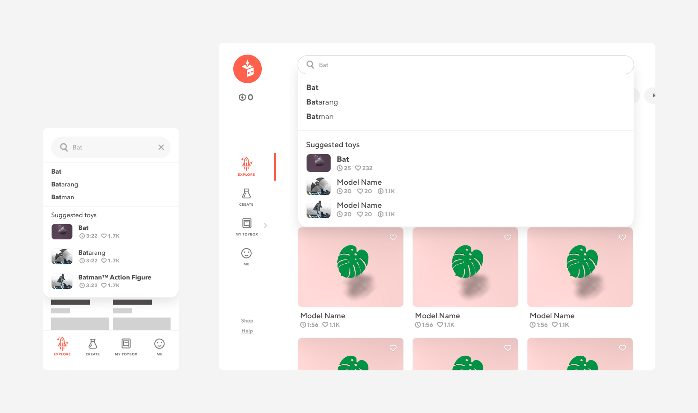
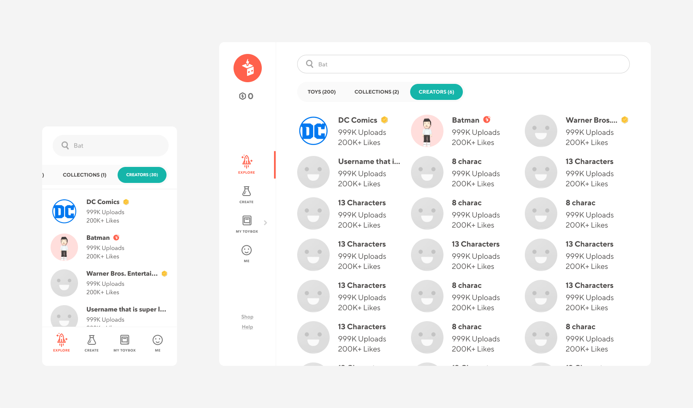
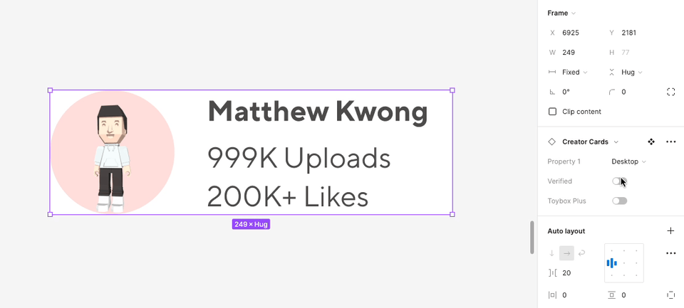

Designing for a more efficient Toybox search experience by reducing the search to print time rate by 7%.
My Role:
Product Designer
Team
Zach O.
Kyle M.
Duration:
3 Months
Platforms
Mobile
Tablet
Desktop
Skills:
Wireframing
Interaction Design
Visual Design
Prototyping
Problem
How might we improve the Toybox searching experience to reduce the time it takes for users to print a model?
The existing Toybox search is limited to toy results only and can be overwhelming to process the results.
To improve this experience, the team and I were determined to make the search process as easy and useful as possible
for Toybox users to find and print a model.
Research
Competitor Analysis
To get a better understanding of how other popular 3D printing websites use filters and sorting methods,
I researched websites like Thingiverse and Cults3D.
Research
Thingiverse
Too many categories to choose from that makes the user even more stressed out when trying to figure out what they want to print.

Research
Cults3D
The top navbar is overwhelming and hard to know what you should be looking at. There are many different design categories and filters being shown, but really lacks order + organization.

Low Fidelity
Trending Searches and Toys
Don’t know what to print? We’ve got you covered.

Low Fidelity
Categories + Suggested Toys
Find what you’re looking for before pressing enter

Low Fidelity
Search Result Filters
Refine your search to find exactly what you’re looking for

Design for a reason
Making data driven decisions
To better understand what time increments to use for the time duration slider, I analyzed our platform's print time data for ALL 3,800+ models and found that.
solution
Introducing a faster way to search
With new filters and categories, we’ve empowered users to print faster than ever.
solution
Trending searches
Looking for ideas to search? We now promote the top 3 trending search queries and toys when you first click into the searchbar.

solution
Suggested toys
With toy suggestions + search complete, users may be able to save time searching through all of the search results.

solution
Search filters
Find what you need within seconds by using the new sort by, print duration, cost, and difficulty filters.
Solution
Find the creators you love
With thousands of users creating toys for our platform you can now search for your favorite creators on Toybox.

Additionally, to ease the process of modifying these cards, I created a card component that utilizes Figma's auto layout and properties.
These features include handling username text-overflow, the ability to easily switch between mobile and desktop cards, and changing the user's account status.

Impact
Printing faster than ever
Within the first 3 months we found that there was a 7% DECREASE in time for users to begin their search for a toy to print and when they press the print button.
Additionally, in the month of August 2024 we found that 40.52% of all toys printed came from search suggestions, while 37.6% came from text input.